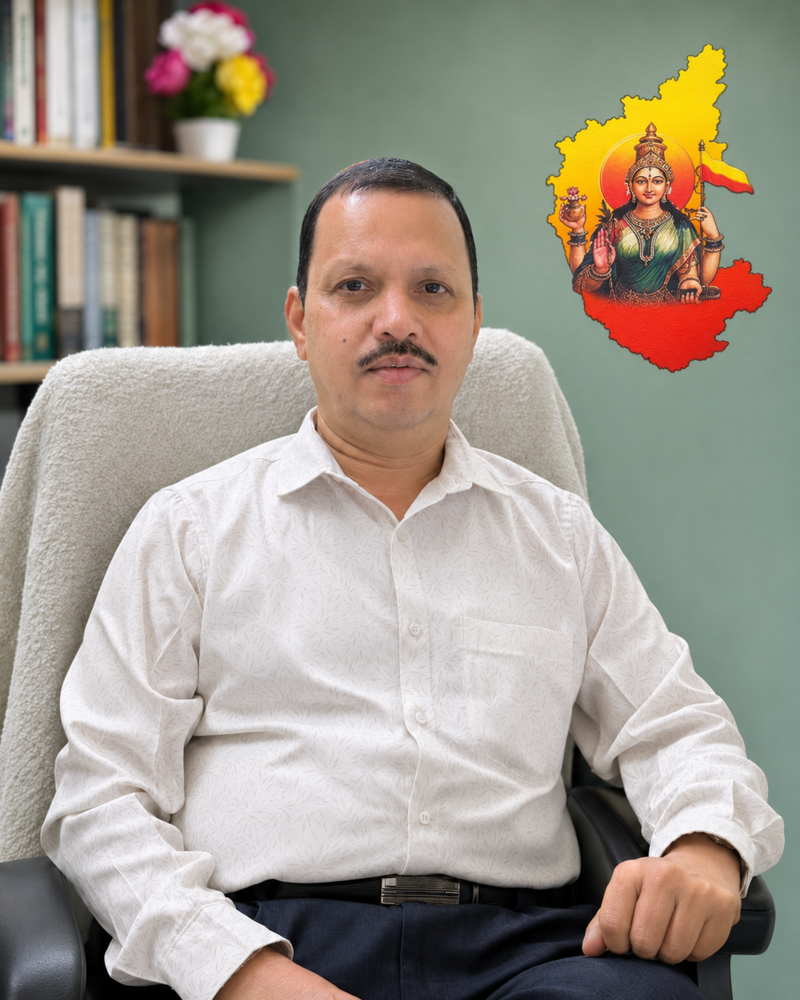

About the firm
Shivashankar & Co
The firm is based in Rajajinagar, Bangalore, providing auditing and tax consultancy services.
The firm assists with income tax returns, GST, book-keeping, company compliance and registration, alongside auditing and tax consultancy.
Start with a conversation.
Tell us about the assistance you need. Contact the firm to discuss your requirements, the relevant records and the next steps.
Our office is at No. 207/41, Ground Floor, 50th Cross, 3rd Block, Rajajinagar, Bangalore 560010.
